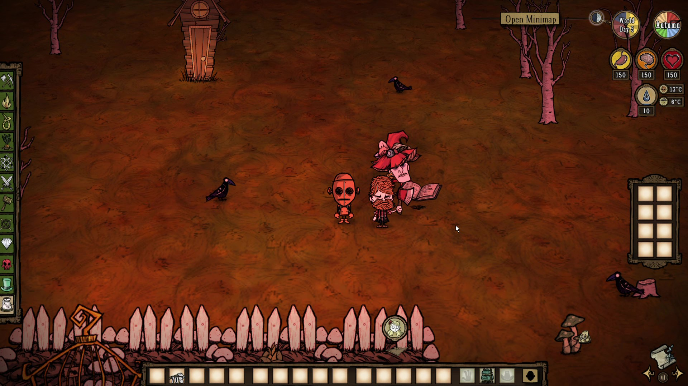
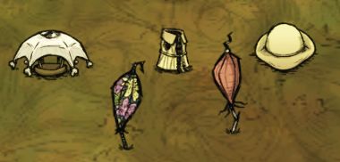
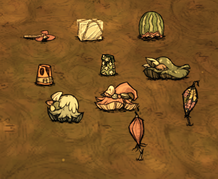

Dont Starve Together is a survival game where you are throwen into a world filled with dark secrets and mystery and must set up a home/base if you want to survive longer than a few days.
The gameplay of dont starve together can get quite bland at times if you dont have the things to leave your base during winter and summer as its just spent waiting and not being able to do anything due to the heat or the cold health drain and can get boring if you dont know what to do next.
Dont starves music is alright if its playing lowly in the background but otherwise I dont find it good but some people could listen to it for hours on end.
Dont starve together has 4 main mechanics health, sanity, hunger and warmth which alone is not much but how dont starve together mixes these together it works so well to help create a great survival game.
Dont starve together has a simple style but it works so well for the mysterious world with mystical creatures.
The user interface is simple once you are in game playing the only real thing you can interact with is the crafting menu, the only downside of their user interface design is that sometimes the main menu can get confusing at times.
The story behind dont starve together is really good but is mostly hidden behind secrets and goes quite indepth for each character.
Dont starve together has many bugs but it is mainly hidden in all of the new content, you wont find that many if you just stick with the older stuff in the game.
I like to play dont starve together because I like to play survival sandbox games and muck around with friends and try to see how long we can survive.
A basic base for dont starve together should have most things on screen but the all ways must have for a basic base is a alchemy engine, fire pit, at least 1 ice box, 1 or more crockpots, chests, berry bushes, sapplings and grass tufts.

If you are struggling maybe get some friends to join you which will ethier make you die quicker or last longer.

When winter comes you are going to keep warm in which you can use a combination of the items below and they are in the order of winter hat, thermal stone, hibearnation Vest(obtainable after killing deerclops), puffy vest, breezy vest, cat cap, rabbit earmuffs and beffalo hat. The best combination for warmth would be puffy vest, beffalo hat and a hot thermal stone. The boss of this season is deerclops.

Spring will come after winter and it will start to rain much more and since rain will make your wetness go up you will freeze easyier and will have items slip out of your hands so make any of the items below to help with the rain. The are in this order as showen below eyebrella, rain coat, rain hat, pretty parasol and umbrella. The best combination for keeping dry is just the eyebrella as it stops all wetness. The boss of this season is moose/goose.

Summer will bring heat to your world and will cause destruction in its wake so make sure your base has ice fling-o matics to keep your base from catching fire, while all the plants slowly wither under the sun. summer is a bit more complex as you will have to go out and search for a being called the antlion who is the boss of summer, if you dont give gifts to they will cause earthquakes and destroy your base if you are standing in it when it happens to be able to give gifts to the antlion you will need to get goggles which can be unlocked by fishing in the osasis. Gifts you can give to antlion are trinkets and thermal stones at most trinkets will last one day and thermal stones 3 days, but keep in mind that the antlions rage timer has a max of 6 days so 2 thermal stones every 6 days will be fine and you wont have to worry about your base being destroyed. The items below are in the order of whirly fan, ice cube(be warry using this as it will slowly make you wet over time and you will move slower), fashion mellon, summer frest, floral shirt, green funcap, blue funcap, red funcap, pretty parasol, umbrella and thermal stone which can be cooled if placed next to an endothermic fire pit. The best combination would be a floral shirt and the eyebrella with a cooled thermal stone.

All bosses in dont starve together are partly optional as when they come you can avoid them using many different methods. Another thing to be aware of is the during your 2nd autumn there will be a boss called bearger who will go through chests and ice boxes looking for food he can ruin a run if you are not caeful.